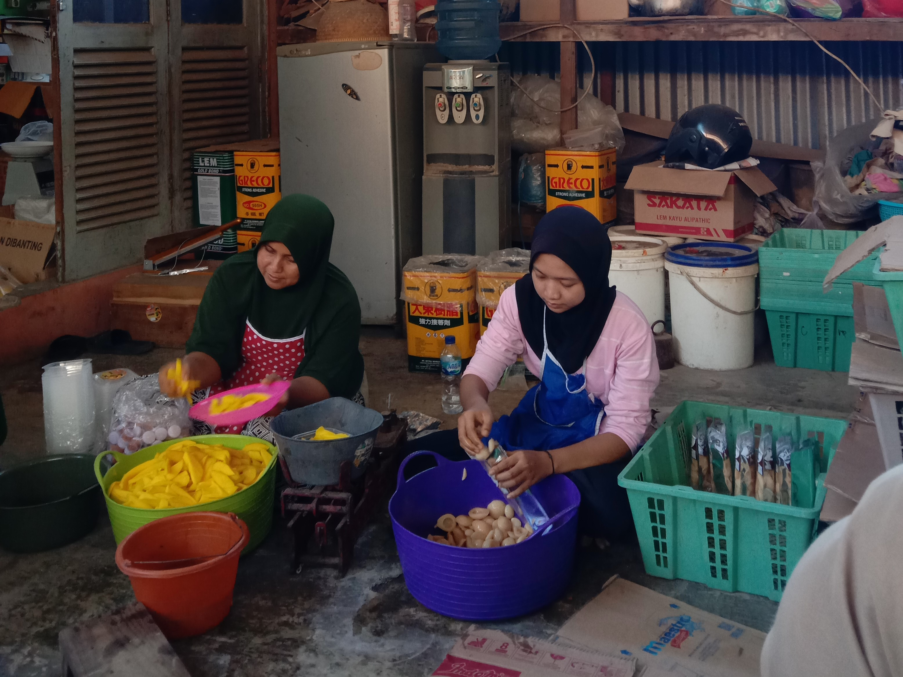
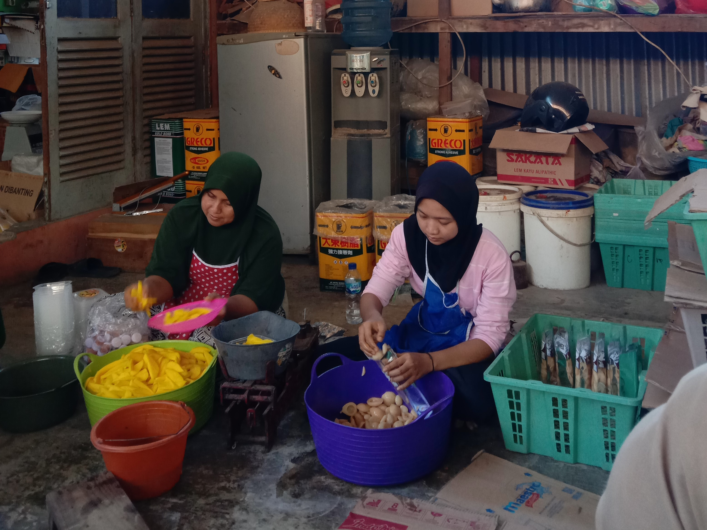
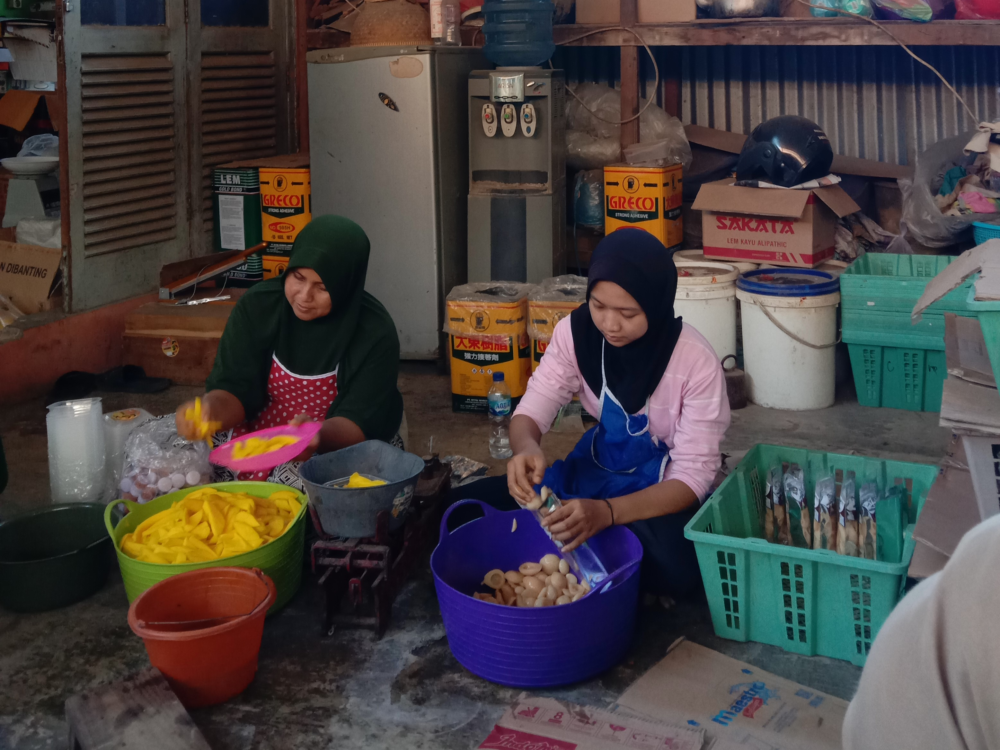
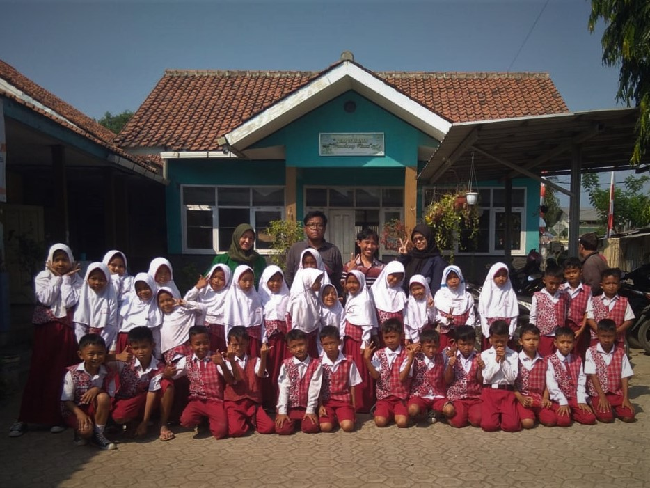
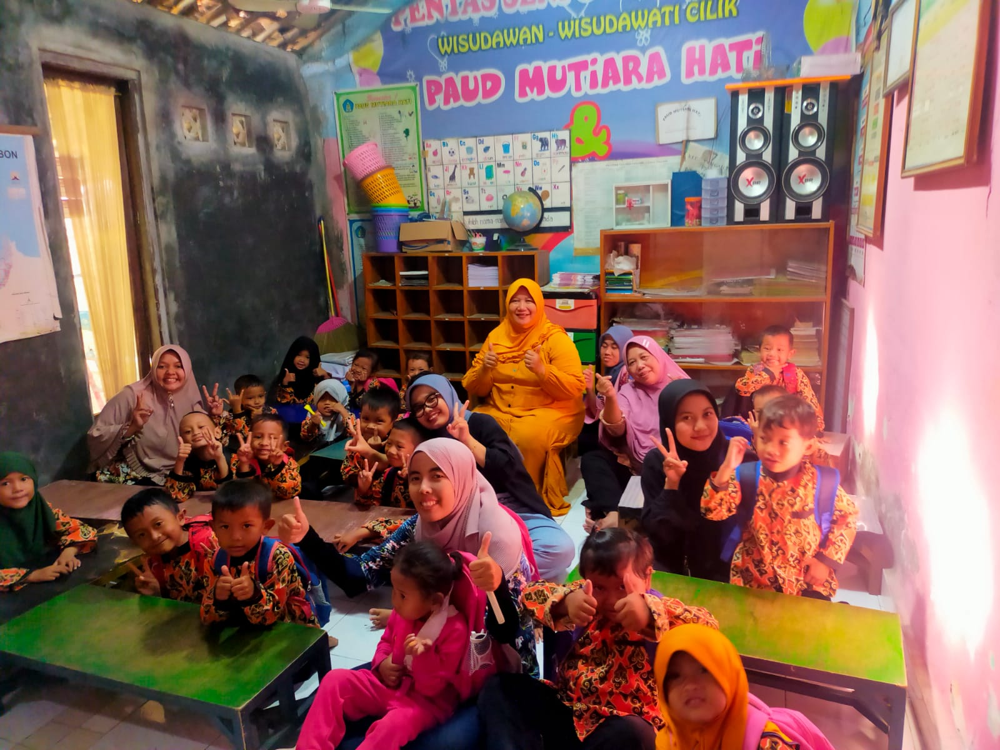
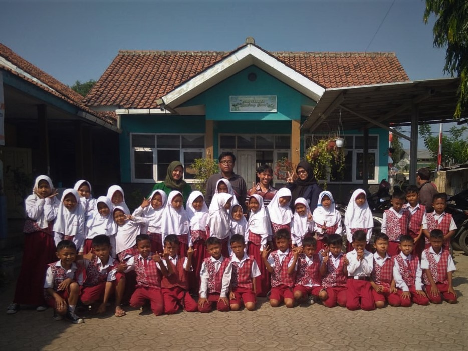
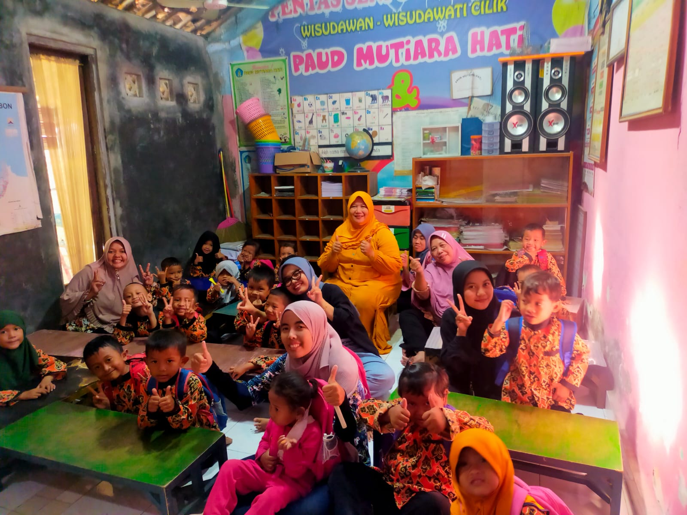

UMKM


 


Temukan Informasi dan Berita Mengenai Desa di Satu Tempat!
Pangeran Gesang, juga dikenal sebagai Ki Gede Gesik, merupakan pemuka agama yang menurunkan penguasa lokal di daerah seperti Nyimas Mertasari, Ki Jaga Baya, Ki Sumirang, Ki Baluran, dan Ki Gede Astapada. Astapada, berdekatan dengan desa Gesik, memiliki kisah menarik saat Ki Gede Astapada merasa diabaikan di Kerajaan Demak dan membawa sumur serta perlengkapan acara dari Demak ke Astapada sebagai respons. Sumur ini, yang memiliki arti filosofis tentang cita-cita dan norma, masih ada dan bahkan memiliki sifat misterius dalam pengisian airnya. Masyarakat setempat menghormati Ki Gede Astapada melalui pertunjukan wayang kulit setiap bulan Agustus, dan desa Astapada akhirnya menjadi desa mandiri pada tahun 1984 setelah sebelumnya menjadi bagian dari desa Gesik.

 


